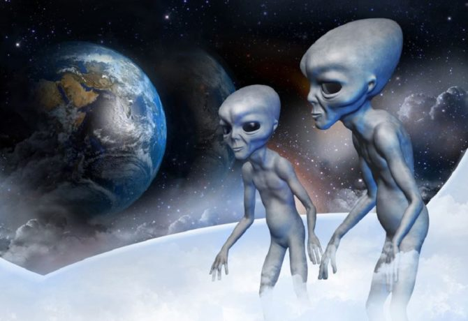

On December 13th, 2007 my life was changed. My day started normally with a bagel and orange juice. I had no idea what was going to happen. I heard a train like noise outside and thought it was a tornado until I heard a gargling sound. What happened next changed my life forever.
While seeking shelter in my bathroom, a bright white light looking portal appeared. All of a sudden it seemed like I was going light speed to another planet. Before I knew it, I was in an entirely different place observing another being of some sort. There were two geometric looking species also observing me. I had no concept of space or where I was.
The other beings did nothing but observe me as I was observing them. They seemed harmless and curious. After what seemed to only be 10 minutes, the same lightspeed seeming travel commenced. I was back in my bathroom untouched. I will never forget it.
Qualities of this other planet/dimension compared to Earth:
| ~~ | Other planet | Earth |
|---|---|---|
| gravity | no | yes |
| intelligent life other than humans | yes | no |
Other dimensions are possible according to String Theory. Learn more here: Additional information.
This is the best picture I could find of what the other beings looked like:

Thank you for reading my story! I hope you found my story to be:
If not, please give me a call at: 678-999-9999 to address your concerns.